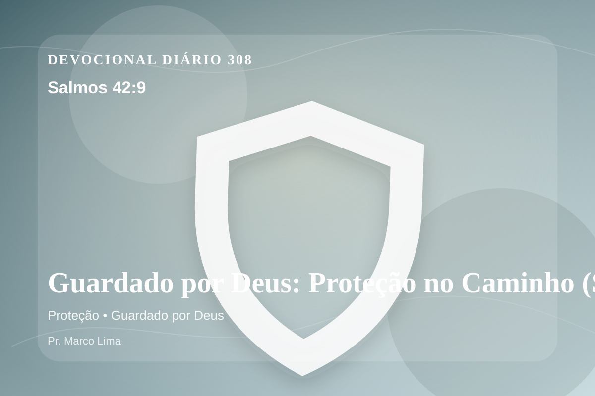

Guardado por Deus: Proteção no Caminho (Salmos 42:9)
Direi a Deus, minha rocha: Por que tu te esqueces de mim? Por que eu ando em sofrimento pela opressão do inimigo?
Pensamento
A mesma passagem pode tratar uma nova área do coração quando ouvimos Deus com humildade. Este devocional começa com uma pergunta simples: que área da sua vida precisa ser iluminada por Salmos 42:9 hoje?
Salmos 42:9 chama o coração a ouvir Deus com reverência e responder com fé prática. A Palavra não foi dada para enfeitar pensamentos religiosos, mas para conduzir pessoas reais ao Senhor.
O tema de proteção precisa ser recebido com simplicidade e seriedade. O ponto central não é apenas saber mais, mas viver de modo mais rendido. A proteção divina não significa ausência de lutas, mas presença fiel de Deus no meio delas. O Senhor guarda a alma, sustenta a fé e conduz Seus filhos mesmo em caminhos difíceis.
Examine se existe orgulho, comparação, medo, culpa escondida ou autossuficiência impedindo sua resposta ao Senhor. A graça não nos humilha para destruir; ela nos quebra para reconstruir em Cristo.
Arrependimento não é apenas sentir peso na consciência; é voltar-se para Deus, abandonar o caminho que entristece o Senhor e confiar que a graça de Cristo é suficiente para perdoar e transformar.
Este é o evangelho que sustenta toda aplicação: Jesus Cristo morreu pelos pecadores, ressuscitou em vitória e chama cada pessoa a responder com fé, arrependimento e uma vida rendida ao Seu senhorio.
Cristo não veio apenas melhorar comportamentos, mas salvar pessoas. Na cruz, Ele trata a culpa; na ressurreição, Ele abre caminho para uma nova vida.
Leve esta Palavra para o ponto mais concreto do seu dia. O fruto da meditação aparecerá quando Cristo governar uma reação, uma prioridade ou uma escolha.
Para Praticar Hoje
- Leia Salmos 42:9 lentamente e destaque uma palavra ou expressão central do texto.
- Confesse a Deus um pecado, resistência ou frieza espiritual que esta Palavra revelou.
- Declare sua fé em Jesus Cristo e pratique hoje uma atitude concreta de arrependimento e obediência.
Oração
Pai, eu não preciso ter medo porque Tu és o meu abrigo. Salmos 42:9 revela que quem habita no esconderijo do Altíssimo descansa sob a sombra do Onipotente. Guarda meus passos. Faz essa verdade criar raízes em mim.
{kind=link}